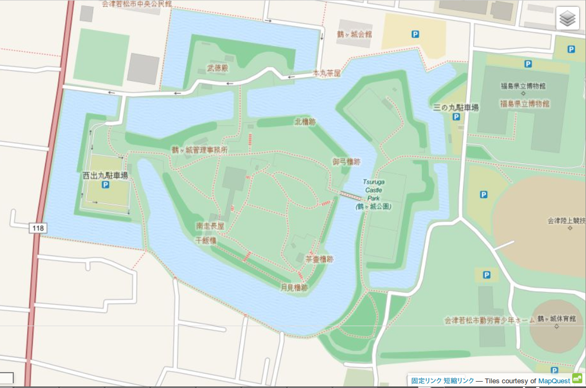
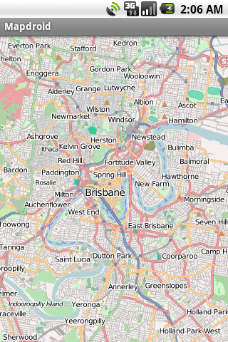
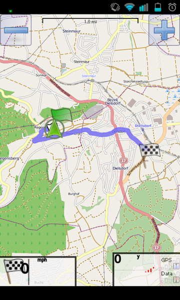

OpenStreetMapアプリ
〜モバイル・Webアプリをグレードアップしよう〜
一般社団法人オープンストリートマップ・ファウンデーション・ジャパン
代表理事
三浦広志
オープンストリートマップ(OSM)って何？
- フリーなWiki地図 作成プロジェクト
- 世界的 伊能忠敬 プロジェクト
- オープン地理データ 作成プロジェクト
- オープン地理データをベースとしたイノベーション
ライセンス：ODbL
データベースとしてのOSM
データ量は膨大かつ成長中
地上に存在する「あらゆるモノ」の、空間的な位置を主キーとしたDB
- 2,000,000,000個の位置情報が格納されている。
Way
- 200,000,000 本の道路などの(線分)情報が格納されている
例
鶴ケ城

データ抽出の例
データ内容の例
TDL
ゴルフ場
利用方法
OpenStreetMapデータ利用方法
Webアプリやブログに地図を貼り付ける
モバイルアプリで地図データを利用する
地図をカスタマイズする
特定用途地図サービスを提供する
データベースとして利用する
Webアプリでの利用
Leaflet.js
Webサイトやモバイル向け
地図関連表示を実現
Javascriptライブラリ
Leaflet.js
- Leafletjs.com
サンプルコード 3step
step1
"map" div要素に地図を作る指定
初期値のズームや位置を指定
var map = L.map('map').setView([51.505, -0.09], 13);
step2
OpenStreetMapのタイル・レイヤーを追加する
copyright表示忘れずに
L.tileLayer('http://{s}.tile.osm.org/{z}/{x}/{y}.png', { attribution: '© <a href="http://osm.org/copyright">OpenStreetMap</a> contributors'}).addTo(map);
step3
場所を示すマーカーやピンを配置し、ポップアップしての情報表示を指示
L.marker([51.5, -0.09]).addTo(map) .bindPopup('A pretty CSS3 popup. <br> Easily customizable.') .openPopup();
イメージ
まとめ
きわめて簡単に追加できるので、アプリに地図機能をいれてはどうでしょう！
OpenLayers
Leaflet.jsより歴史有るライブラリ
編集機能もあり
サイズが大きくなったため、次メジャーバージョン(3.0)で大幅な改変が予定
ブログソフトなど、ほとんどのWebプラットホームでプラグイン対応可能
OpenLayers
モバイルアプリでの利用
フリーのライセンスのため、オフライン利用可能
ライブラリ等のサポート
HTML5サポート
Osmdroid (Android)
MapsViewっぽくつかえる
code.google.com/p/osmdroid からjar入手
配布サイトのドキュメント情報は古い。
Wikiやチュートリアル等もバージョンに注意要
Mapsforge (Andoroid)
オフラインマップでつかえる
ライブラリ
OSMAnd2 (android)
OpenStreetMapを利用するためのライブラリ
OpenStreetMapの編集アプリでもある
*
route-me (iOS)
iOSでのOSMライブラリの決定版
機能はかなりの充実
すでにOSM関係アプリが多くあるので、アイディア勝負になります
背景地図をカスタマイズする
使い勝手の良さは、背景地図の表現から
アプリのデザインと、地図表現を統一する
MapBox.com

MapBox
Free版(アクセス制限)あり
容易にWebからカスタマイズできる
CloudMade
カスタマイズ背景地図配信サービス
Free版あり
Frameworkも提供
- Java,C++,JS,Pythonなど
独自タイル配信
サービスを使わず、独自にマップ・タイルを配信する
OSMのコミュニティ・タイルサーバは、コミュニテイ向け
tile.openstreetmapは、ビジネス用途には推奨されない(遮断もあり)
Osmosis
OSMデータを操作するツールキット
Javaベース
OSMデータ取得も支援している
- https://wiki.openstreetmap.org/wiki/Osmosis
Tirex
Mapnikレンダリングの駆動サーバ
PostgreSQL/PostGISデータベースに格納したOSMデータから地図画像を生成
ApacheやNginxから、APIでリクエストを処理する
TileMan
Tirexを駆動する Nginx httpサーバをベースにしたマップサーバ
軽量、高性能が売り
日本製 OpenStreetMap.jp にて実運用中
Nginx上に Lua言語で実装されている
Osmosis/PostGIS/Tirexの処理スクリプトやドキュメントを含む
Mapnik-stylesheet
地図タイル画像のレンダリングを指示するデザインの設定
XML
OpenStreetMapの基本の設定を元に、改良可能
URL
https://wiki.openstreetmap.org/wiki/Osmosis
https://wiki.openstreetmap.org/wiki/Tirex
https://github.com/osmfj/tileman
https://github.com/osmfj/mapnik-stylesheets
モバイル・アプリ実例
- イメージを高めるため、OSMを使った実例を見ていこう
Maps with me
オフライン地図アプリ(ダウンロード→閲覧)
背景のベースマップ（ラスター）
店やバス停等の地理情報（ベクター）
画面イメージ

RMaps
オフラインマップアプリ
LGPLライセンスで、参考になる
http://robertdeveloper.blogspot.jp/2009/08/rmaps.html
MapDroid
オフラインマップアプリ
LGPLライセンスのフリーソフトウエア
https://github.com/tedjp/mapdroid
画面イメージ

AndRoad
OSM ベースのナビアプリ
GPLのフリーソフトウエア
- https://wiki.openstreetmap.org/wiki/AndRoad

開発者向け情報
Wikiサイト:
https://wiki.openstreetmap.org/wiki/Software
https://wiki.openstreetmap.org/wiki/Develop
https://wiki.openstreetmap.org/wiki/Android
https://wiki.openstreetmap.org/wiki/Deploying_your_own_Slippy_Map
API解説
- http://wiki.openstreetmap.org/wiki/Databases_and_data_access_APIs
特定用途地図サービスの提供
バリアフリーマップ・ナビ
- Wheelmap.org
OpenStreetMapの活用：新たな方向性
背景図以外での利用を
ボランティア（マッパー）が作成した地理データ（データベースの中身）を利用できる
地理データベースへ APIを通じてクエリーできる
LOD化もされている
LinkedgeoData
自らデータを使う
- データベースとデータアクセス APIの提供
- Planet.OSM 全世界のデータがXML DUMP形式などで取得できます。
- XAPI, Overpass API: 全世界のデータを、条件指定で取得できます。
Planet.OSM
- XMLのデータサイズは、全世界で200GB程
- データベース管理システムに取り込んでデータ処理ができる
- ただし、Xeon 4core 16GBマシンでPostGIS取り込みに １週間かかるとの報告がありました
XAPI
条件を指定して、Web経由でデータを取り出せます。 RESTfulなアクセス可能です。
Overpass API
極めて複雑なクエリーを広範囲に行えます。 XML風、JSON風のクエリー言語Overpass QL で検索可能です。
データ作成の模様
世界中 120万人 で作成中
最後に
OpenStreetMapは OSS的なDBデータそのものを提供しています。
OpenStreetMap
http://OSM.org/
http://OSM.jp/
ご清聴ありがとうございます
OSMFJ Hiroshi Miura (miurahr@osmf.jp)